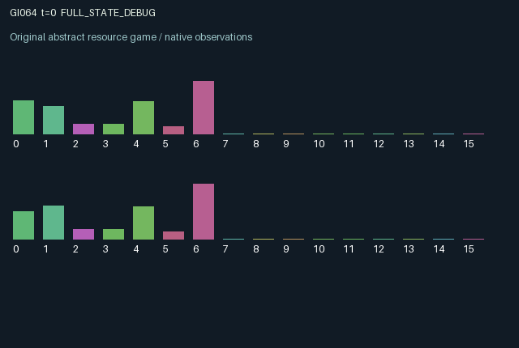

GI064 / LEGACY_ARRAY
astra-d2-00064: sacrificial cross-feeding with a polluted nutrient pool
2 agents5 actions16 observation columns32 original horizonRuntime: PASS
Release verification episode
Untrained uniform legal actions. Actual JAX state sampled along the full original episode; full-state debug camera. No human performance or learning claim.

Run this game
crucibles play --game 64
Start Python locally, then open the address printed by the terminal. Installation, multiplayer, takeover and keyboard controls →
Objective, rewards & ending
Exact task contract
{
"termination": "Original kernel t >= 32; see mechanism and source"
}Declared per-step reward bounds: -1.0 to 1.0. Observability: source_defined.
Rules
Original mechanism document (historical status wording retained)
# astra-d2-00064: sacrificial cross-feeding with a polluted nutrient pool This parentless source proposes a two-agent resource process. Each participant owns biomass and a perishable catalyst; its catalyst helps the other participant grow, not itself. Sacrificing biomass creates catalyst only in the next state. Both participants also draw from one nutrient pool and create pollution that suppresses future growth. This is intentionally related to generic ecological cross-feeding, common-pool extraction, and public maintenance mechanisms. No external source or parent program was consulted; no nonisomorphism or eligibility claim is made. Actions are 0 wait, 1 cultivate, 2 harvest, 3 clean, and 4 donate biomass. Every action is legal. Harvest and donation remove different fractions of the acting participant's existing biomass. Cultivation demand depends on private affinity and the other participant's previously stored catalyst. If combined demand exceeds current nutrients, allocation is proportional to demand. Growth uses the old toxin level. Cleaning replenishes nutrients and reduces toxin for later decisions; it does not retroactively improve current growth. Harvest creates toxin, and cultivation also pollutes. Catalyst decays, biomass has small maintenance loss, and nutrient inflow occurs each step. Step dynamics are deterministic after randomized initialization; the supplied step key is intentionally unused. The strategic links are persistent: donation creates a delayed benefit for the partner, cultivation can crowd out the partner's nutrient access, and cleaning improves both participants' subsequent production. Harvest delivers immediate consumption but damages the shared growth medium. These competing incentives may support cooperation, exploitation, or low activity; learning any such behavior is untested. Observation columns 0..15 are own/other biomass, own/other catalyst, common nutrient, common toxin, own affinity divided by 1.25, own/other last harvest divided by 0.38, own/other last uptake divided by 0.15, own/other previous action divided by 4, elapsed steps divided by 32, and own/other cumulative harvest divided by 16. Affinity is not directly disclosed to the other agent; public uptake and action histories may allow inference. All other payoff-relevant dynamic quantities are public through these views. Each reward is tanh of twice harvested biomass, minus cultivation, cleaning and donation charges, minus a shared charge proportional to the new toxin level. The monotone tanh maps every finite underlying utility to [-1,1]; state resources are clipped or naturally bounded and the proportional allocation denominator has a positive floor. The interface has two agents, 16 float32 observation entries, five actions, and a 32-step episode with both done flags set when the incremented clock reaches 32. The final state is returned without an internal reset. This document records source intent only. Candidate execution, compiler behavior, bilateral intervention results, mechanism qualification, duplicate review, and learning effectiveness have not been assessed by the author.
Commands
0Action 0; see mechanism and source
1Action 1; see mechanism and source
2Action 2; see mechanism and source
3Action 3; see mechanism and source
4Action 4; see mechanism and source
Roles & abilities
agent_0 Original legacy agent; see mechanism and source
agent_1 Original legacy agent; see mechanism and source
Observation permissions
Training receives only the original observation rows. Role cameras use declared visibility; debug cameras are explicitly marked. Local benchmark records log debug exposure and role takeover history.
Exact observation layout
[]
Entity visibility & attributes
[]
Actual verification & provenance
Per-game execution receipt
{
"game": "gi064",
"status": "PASS",
"verification_revision": 2,
"source_sha256": "96303d25e40d5bb3724d7afdd3ee3cb1b0844d080baccf5bdca7859b416c72bc",
"seed": 20261101,
"runtime": {
"jax": "0.4.38",
"numpy": "1.26.4",
"devices": [
"TFRT_CPU_0"
]
},
"dimensions": {
"num_agents": 2,
"observation_size": 16,
"num_actions": 5,
"max_steps": 32
},
"checks": {
"eager_reset": {
"status": "PASS",
"seconds": 0.8016378879547119
},
"observation_spaces_legal_masks": {
"status": "PASS",
"seconds": 0.1918480396270752
},
"eager_step": {
"status": "PASS",
"seconds": 0.9281749725341797
},
"jit_reset": {
"status": "PASS",
"seconds": 0.4593007564544678
},
"jit_step": {
"status": "PASS",
"seconds": 0.21103787422180176
},
"eager_jit_integer_parity_float_measurement": {
"status": "PASS",
"seconds": 0.0
},
"jit_vmap_reset": {
"status": "PASS",
"seconds": 0.4621889591217041
},
"jit_vmap_step": {
"status": "PASS",
"seconds": 0.3108842372894287
},
"outer_autoreset_api": {
"status": "PASS",
"seconds": 0.5785596370697021
},
"full_original_horizon_episode_and_render": {
"status": "PASS",
"seconds": 2.1094584465026855
}
},
"human_scores": null,
"browser_controls": "PENDING",
"failures": [],
"elapsed_seconds": 7.078143358230591,
"float_parity_max_abs": 2.9802322387695312e-08,
"numerical_parity": "UNDETERMINED_NONZERO_FLOAT_DIFFERENCE",
"raw_terminal_absorbing": "NOT_PART_OF_ORIGINAL_LEGACY_CONTRACT",
"terminal_outer_reset": "PASS",
"episode_steps": 32,
"scripted_random_returns": [
0.037637406203430146,
-0.005441000481368974
],
"terminal": true,
"demo_information": "FULL_STATE_DEBUG",
"demo_frames": 33,
"render_roles_checked": 2
}Chromium control verification
{
"game": "gi064",
"status": "PASS",
"human_scores": null,
"engineering": true,
"checks": [
"catalog_selected_and_real_native_reset",
"dom_queue_and_native_step",
"second_participant_ownership_and_native_joint_step",
"all_roles_individually_controllable_no_role_cap",
"explicit_debug_camera",
"release_to_pure_ai_without_reset"
],
"seconds": 2.837705373764038
}Original identity and file hashes
{
"id": 64,
"key": "gi064",
"title": "astra-d2-00064: sacrificial cross-feeding with a polluted nutrient pool",
"summary": "",
"tags": [],
"family": "legacy_array",
"dimensions": {
"num_agents": 2,
"observation_size": 16,
"num_actions": 5,
"max_steps": 32
},
"source_sha256": "96303d25e40d5bb3724d7afdd3ee3cb1b0844d080baccf5bdca7859b416c72bc",
"manifest_sha256": "4855af537b8d8aba6e6098aa3989c2052a4687eba4bf462aba83326a8abaa2b4",
"files": [
{
"file": "candidate.py",
"sha256": "96303d25e40d5bb3724d7afdd3ee3cb1b0844d080baccf5bdca7859b416c72bc",
"bytes": 4391,
"origin": "work/exp_2/astra_generation/discovery_v2/initial/candidate_00064/attempt_00/candidate.py"
},
{
"file": "mechanism.md",
"sha256": "4fc40f9a944c25edbbf27f3c48bdee1944f71bfe21a5cf95a2f53c6b286fffc6",
"bytes": 3137,
"origin": "work/exp_2/astra_generation/discovery_v2/initial/candidate_00064/attempt_00/mechanism.md"
}
],
"original_status": "LEGACY_SOURCE",
"original_saved_replay": false,
"release_validation": "PASS",
"human_scores": null,
"browser_validation": "PASS"
}